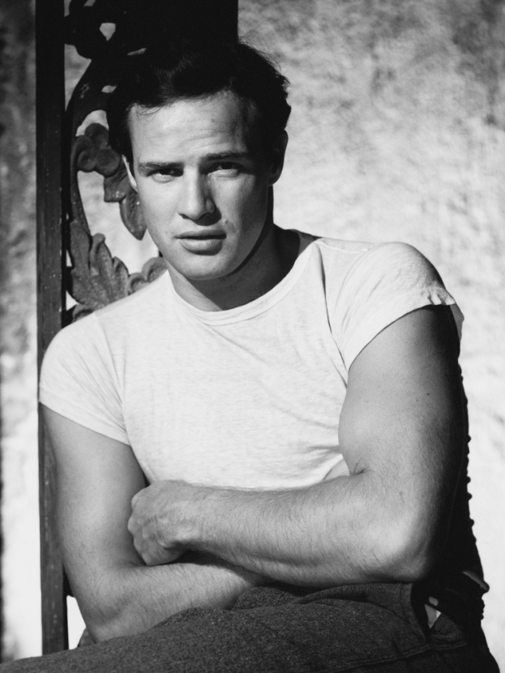
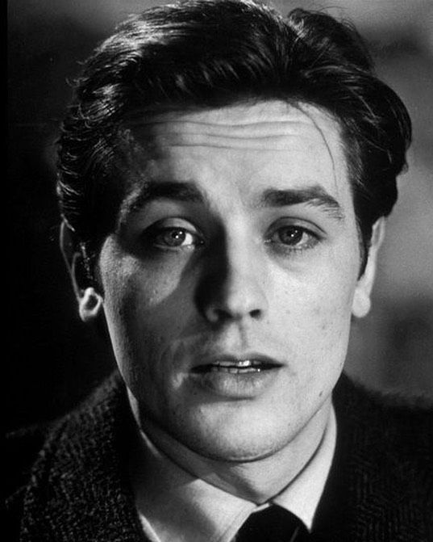
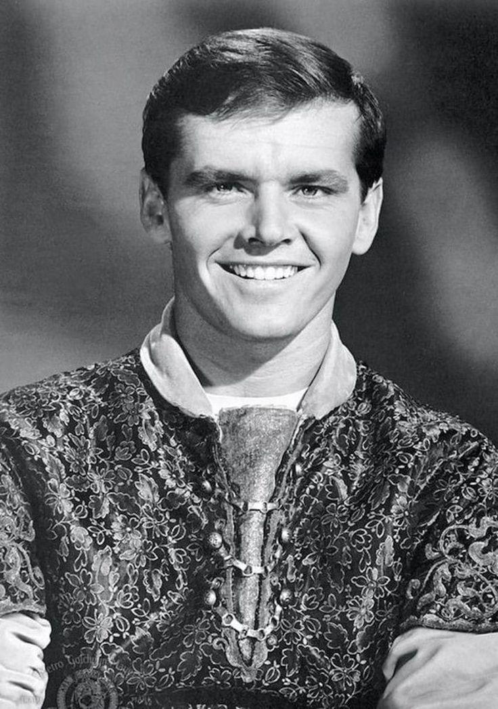

Актёры

Марлон Брандо
Марлон Брандо широко считается величайшим киноактером всех времен. Брандо
дебютировал
на досках Бродвея 19 октября 1944 года в фильме "Я помню маму", имевшем большой успех.
Будучи
молодым
бродвейским актером, Брандо был приглашен поисковиками талантов из нескольких разных студий
на
кинопробы
для них, но он отказался от них, потому что не позволил бы связать себя стандартным в то
время
семилетним контрактом.

Але́н Дело́н
Французский актёр театра и кино, кинорежиссёр, сценарист и продюсер.
Кинозвезда и
секс-символ 1960-х — 1980-х годов.В 1960-е годы Делон много работал, каждый год на экраны
выходило
по нескольку фильмов с его участием. В 1961 году Ален Делон снялся в комедии Рене Клемана «Как хорошо
жить».

Джек Николсон
Джек Николсон, американский актер, продюсер, режиссер и сценарист, является трехкратным
лауреатом премии "Оскар" и двенадцатикратным номинантом. Николсон также известен тем, что является одним
из
двух актеров - другим является Майкл Кейн, - которые получали номинацию на Оскар в каждое десятилетие с
60-х по 00-е годы.